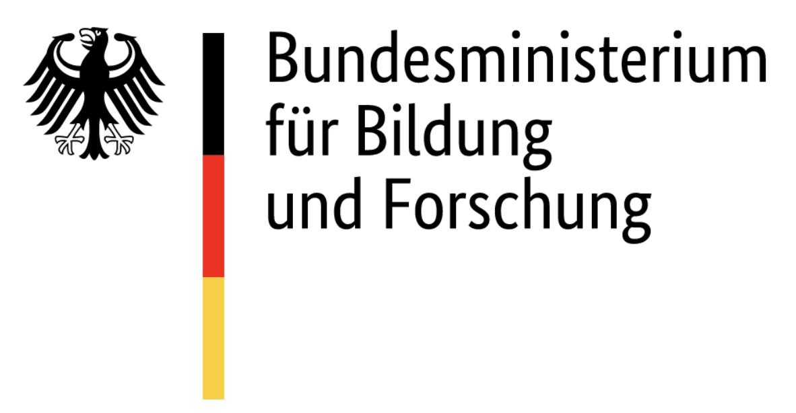

Projects
Funded projects
No matching items
Funded projects
| Title | Team | Funder | Abstract | Funding | Start | End | |
|---|---|---|---|---|---|---|---|
| From local to systemic implementation: Embedding open research in institutional practices | Malika Ihle & Felix Schönbrodt | Volkswagen Stiftung | 🔍 Abstract | 524,606 € | 2025 | 2028 | |
| Agile-RDM - Establishing an agile and needs-oriented research data management strategy in psychology | Katarina Blask, Mario Gollwitzer & Felix Schönbrodt | DFG | 🔍 Abstract | 187,636 € (overall: 557,000 €) | 2025 | 2028 | |
| From “Academic works” to “Working in academia”: Analyzing reform proposals in an agent-based modelling approach (part of the META-REP priority program, 2nd funding phase) | Felix Schönbrodt, Richard McElreath, & Filip Melinscak | DFG | 🔍 Abstract | 347,517 € | 2025 | 2028 | |
| Experimental investigation of the daily motivational processes in intimate relationships using ecological momentary interventions | Caroline Zygar-Hoffmann & Felix Schönbrodt | DFG | 🔍 Abstract | 274,594 € | 2024 | 2027 | |
| META-REP (Priority Program): A meta-scientific program to analyze and optimize replicability in the behavioral, social, and cognitive sciences | Mario Gollwitzer, Katrin Auspurg, Tina Lonsdorf, Susann Fiedler, & Felix Schönbrodt | DFG | 🔍 Abstract | ~10 Mio € | 2022 | 2028 | |
| How an academic system can achieve a trustworthy knowledge base: Analyzing reform proposals in an agent-based modeling approach (part of the META-REP priority program, 1st funding phase) | Felix Schönbrodt, Richard McElreath, & Filip Melinscak | DFG | 🔍 Abstract | 234,630 € | 2022 | 2025 | |
| Automatic classification of the emotional impact of video sequences | Felix Schönbrodt & Klaus Diepold | DFG | 🔍 Abstract | 230,000 € (overall volume: 520,000 €) | 2017 | 2020 | |
| The dynamics of implicit motives in close relationships | Birk Hagemeyer & Felix Schönbrodt | DFG | 🔍 Abstract | 237,800 € | 2016 | 2019 | |
|  | Improving the course „Scientific working“ at the B.Sc. Psychology at LMU Munich | Felix Schönbrodt & Michael Zehetleitner | BMBF | 🔍 Abstract | 28,600 € | 2014 | 2014 |
| Psychometrie impliziter Motive (Scientific Network) | Felix Schönbrodt & Birk Hagemeyer | DFG | 🔍 Abstract | 35,587 € | 2013 | 2015 |